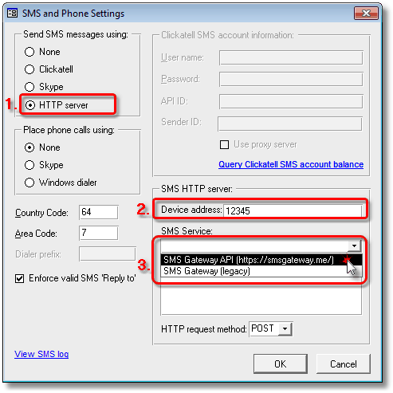

|
|
PRS News & Tips | November 2015 |
We’ve just released PRS 8.1.8. To download and install this recommended upgrade go to the Installing the Latest PRS Client section on our Updates web page and follow the instructions.
What’s New in PRS 8.1.8
A lot of work has gone into this release (most of it under the hood) including a completely revamped logging system and lots of optimizations for larger databases (over 100K personnel records).
For a full list of the changes since the previous release see the PRS Changelog web page.
Support for SMS Gateway API
 in version 8.1.8
in version 8.1.8
If you have an Android phone and are subscribed to the PRS SMS option you can now send SMS messages through your phones via a free SMS Gateway API account:
-
Unlike traditional SMS Gateways such as Clickatell the SMS messages go out through your phone so there are no additional messaging charges other than those you normally incur.
-
Because the messages are sent from your phone there are no caller ID blocking issues (traditional SMS Gateways sometimes have blocking issues sending through local carrier networks).
Once you have configured and added your phone(s) to the SMS Gateway API account you can configure the PRS to use the SMS Gateway API.
First, logon as PRS Supervisor (File→Logon→Supervisor menu command) then open the SMS configuration dialog (Tools→Setup→SMS Texting and Phone Calls):

-
Send SMS messages using HTTP Server.
-
Enter your phone’s SMS Gateway API device address.
-
Select SMS Gateway API (https://smsgateway.me/) SMS Service (you will be prompted to enter your account credentials).
New Logging System
in version 8.1.8
The PRS logging system has received a lot of attention:
-
All user transactions are recorded.
-
Lots of new database consistency checks have been added around database updates and deletions — any inconsistencies are logged.
-
All errors reported to the user are logged.
-
When you send us a PRS support email (using the PRS Help→EMail PRS Support… menu command) you have the option to include the latest log file.
-
There’s a new Log viewer: You can view the latest log entries by clicking the View Log button on the Security page of the PRS Tools→Options… menu command (you have to log in as Supervisor to access this function).
Goto Commands reimplemented
in version 8.1.8
To accommodate scaling in large databases we’ve reimplemented the Goto commands and some related Goto List and form Lock/Unlock behaviour — everything still works the same but there are a few subtle differences:
-
When you "Goto" a record the underlying form is filtered to a single target record (use a Find command to locate more than one record).
-
There’s been a minor change to the Lock/Save/Unlock command (F4 shortcut key): If you have unlocked and edited a record then the Lock command saves the record and the Lock turns orange, you can continue editing without having to first unlock the record. As usual, moving to another record automatically saves and locks the form.
-
The F5 shortcut key adds the current record to the Goto List, if the Goto List is not open F5 opens it (same as before). The F5 shortcut also works if the form is in Datasheet View and could be used as an alternative to tagging.
Tips and Tricks
Document Search Tool tips
-
Update your document search index regularly using the Tools→Setup→Document Search Index… menu command to keep your searches up to date.
-
Blue document names displayed in the Document Search Tool indicate that the document is linked to a PRS Personnel record — you can go straight to that record by holding down the Ctrl key then clicking on the green Goto button next to the document name.
-
Press the F9 shortcut key to open the Document Search Tool, press the Esc key to close it.
-
Tick the Show document folder names checkbox to view the full document path names.